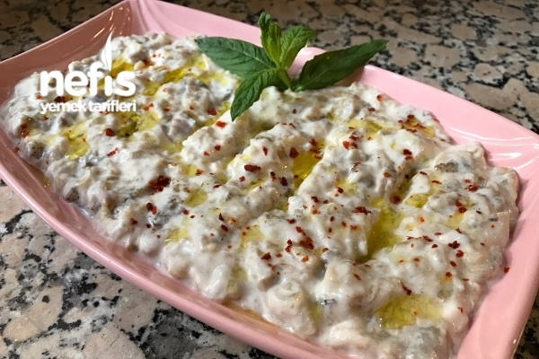

Roasted Eggplant Salad

Description
This is hardly a salad, it is rather a kind of yoghurt but it just fits with meat and chicken dishes
Ingredients
- Strained yoghurt
- Roasted Eggplant (you can roast it yourself)
- Garlic (grated)
- Olive oil
Steps
- Mix grated garlic and yoghurt in a bowl
- Add roasted eggplant and mix
- Spread some olive oil (and some walnuts if you like)
- Serve as you please